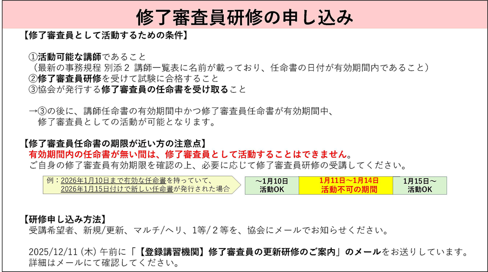

注意ポイント
更新履歴（過去2ヶ月）
| 日付 | 更新箇所 | ファイル名 | 更新箇所 | 備考 |
|---|---|---|---|---|
| 2026年6月26日 | 修了審査 | 修了審査マニュアル（マルチローター用） | 監査団体からの指摘に伴う変更。変更箇所にマーカー（ピンク色）を入れています。マーカー（黄色）は前回（6 月 3 日）変更箇所です。 | |
| 修了審査 | 修了審査マニュアル（ヘリコプター用） | 監査団体からの指摘に伴う変更。変更箇所にマーカー（ピンク色）を入れています。マーカー（黄色）は前回（6 月 3 日）変更箇所です。 | ||
| 2026年6月2日 | 修了審査 | 修了審査マニュアル（マルチローター用） | 細則の変更に伴う変更。変更箇所にマーカーを入れています。 | |
| 修了審査 | 修了審査マニュアル（ヘリコプター用） | 細則の変更に伴う変更。変更箇所にマーカーを入れています。 | ||
| 講師用講習教材 | 資料２８ Q&A | P16 Q17のＡの内容を変更しました。Ｐ20 Q22を追加。 | ||
| 講師用講習教材 | 参考112-1 実地修了審査の説明（マルチ1等基本）（パワーポイント） | 細則の変更に伴う変更。 | ||
| 講師用講習教材 | 参考112-2 実地修了審査の説明（マルチ1等夜間）（パワーポイント） | 細則の変更に伴う変更。 | ||
| 講師用講習教材 | 参考112-3 実地修了審査の説明（マルチ1等目視外）（パワーポイント） | 細則の変更に伴う変更。 | ||
| 講師用講習教材 | 参考112-4 実地修了審査の説明（マルチ1等25kg以上）（パワーポイント） | 細則の変更に伴う変更。 | ||
| 講師用講習教材 | 参考111-1 実地修了審査の説明（マルチ2等基本）（パワーポイント） | 細則の変更に伴う変更。 | ||
| 講師用講習教材 | 参考111-2 実地修了審査の説明（マルチ2等夜間）（パワーポイント） | 細則の変更に伴う変更。 | ||
| 講師用講習教材 | 参考111-3 実地修了審査の説明（マルチ2等目視外）（パワーポイント） | 細則の変更に伴う変更。 | ||
| 講師用講習教材 | 参考111-4 実地修了審査の説明（マルチ2等25kg以上）（パワーポイント） | 細則の変更に伴う変更。 | ||
| 講師用講習教材 | 参考113 実地修了審査の説明（ヘリ2等25kg以上）（パワーポイント） | 細則の変更に伴う変更。 | ||
| 講師用講習教材 | 参考110修了審査コースの説明（ﾊﾟﾜｰﾎﾟｲﾝﾄ） | 不要のため削除。 | ||
| 2026年5月26日 | 事務規程 | 登録講習機関事務規程（2026年5月25日適用） | 第19版に更新しました。詳細は改訂履歴を確認してください。 | |
| 事前準備＆入学事務 | 無人航空機操縦者技能証明の取得に向けたロードマップ | 新規追加しました。受講者に配布ください。 | ||
| 事前準備＆入学事務 | 入学手続きマニュアル2026年5月作成 | 入学申請書類から住民票を削除しました。 | ||
| 事前準備＆入学事務 | 別添10入学申請書 第8版 様式 | 入学申請書類から住民票を削除しました。 | ||
| 事前準備＆入学事務 | 提出書類のチェック | 入学申請書類から住民票を削除しました。 | ||
| 講習 | 実地講習安全規程 | 装備が必要な保護具に保護メガネを追記しました。 | ||
| 修了審査 | 別添4-1 講習記録簿 （実地 修了審査成績表 マルチ） 第7版 2026年6月5日以降 | 実施基準の改訂に向けて新様式を追加しました。6月5日以降はこちらを使用してください。 | ||
| 修了審査 | 別添4-2 講習記録簿（実地 修了審査成績表 ヘリコプター） 第4版_令和8年6月5日以降 | 実施基準の改訂に向けて新様式を追加しました。6月5日以降はこちらを使用してください。 | ||
| 2026年4月24日 | 講師用講習教材 | 資料２８ Q&A | P37 Q501 事務規程を変更しましたので、同時に複数の受講生の机上試験が可能になりました。 | |
| 2026年4月21日 | 事前準備＆入学事務 | 登録講習機関eラーニング申込票（事務所用） | 学科講習（eラーニング講習）講座の追加に伴い、新規作成をしました。 | |
| 事前準備＆入学事務 | eラーニング規約（事務所用） | マニュアルが学科講習（eラーニング講習）講座の追加に伴い、新規作成をしました。 | ||
| 講習 | eラーニング受講マニュアル | 受講生マニュアルのダウンロードURL及びパスワードを忘れた際のリセット手順の追加。 | ||
| 修了審査 | 修了審査マニュアル（マルチローター用） | P28 の1等目視外のスクエア飛行、「GPS＆ビジョンセンサ―ON」の明確化。 | ||
| 2026年3月31日 | 事務規程 | 事務規程の変更がありました。 | ||
| 入学準備＆入学事務 | 入学手続きマニュアル | 学科講習（eラーニング講習）講座の追加に伴い、入学申請書他の変更をしました。 | ||
| 入学準備＆入学事務 | 入学申請書 | 学科講習（eラーニング講習）講座の追加に伴い、様式を変更しました。 | ||
| 入学準備＆入学事務 | eラーニング規約 | 学科講習（eラーニング講習）講座の追加に伴い、eラーニング規約を追加しました。入学申請書の誓約書に、「eラーニング規約」に同意の記載があります。 | ||
| 入学準備＆入学事務 合格後の事務 |
提出書類のチェック | 学科講習（eラーニング講習）講座の追加に伴い、チェックリストを変更しました。 | ||
| 講習 | 講習のマニュアル | 学科講習（eラーニング講習）講座の追加に伴い、配布教材の説明、合格後の報告書類などを変更／追加しました。 | ||
| 講習 | 講習記録簿 | 学科講習（eラーニング講習）講座の追加に伴い、記録書の変更／追加しました。対面の記録書も変更されているので、気をつけてください。 | ||
| 講習 | eラーニング 受講マニュアル | 受講生用の「eラーニング 受講マニュアル」を追加しました。（農水協から案内とともに送付する予定です） | ||
| 講習 | eラーニング 講習事務所用マニュアル | 講習事務所用の「eラーニング 講習事務所用マニュアル」を追加しました。 | ||
| 参考資料 | 農水協手数料について | 学科講習（eラーニング講習）講座の追加に伴い、手数料の変更をしました。 | ||
| 参考資料 | 事務所コード一覧 | 講習事務所の追加に伴い、手数料の変更をしました。 | ||
| 2026年3月24日 | 修了審査 | 修了審査マニュアル（マルチローター） | 日本海事協会からの連絡により、P19 及び P29 の目視外の異常事態における飛行」の離陸直後の「5 秒間ホバリングをしてください」の「5 秒間」を削除。 | |
| 講師用講習教材 | 参考資料111-3 | 日本海事協会からの連絡により、目視外の異常事態における飛行」の離陸直後の「5 秒間ホバリング」の「5 秒間」を削除 | ||
| 2026年2月01日 | WebSite | 登録講習機関の教育の内容の基準等を定める告示の一部を改正する告示を追加しました。 | ||
| 2025年12月26日 | WebSite | 試験実施基準等のリンク切れ修正 | ||
| 修了審査 | 修了審査マニュアル（マルチローター用） | 試験実施基準等のリンク切れ修正 | ||
| 修了審査マニュアル（ヘリコプター用） | 試験実施基準等のリンク切れ修正 | |||
| 講師用講習教材 | 資料32 | 実地試験通達 リンク切れに伴う修正 | ||
| 資料5-1と資料5-2 | 学科講習用に「CRM」の解説書を作りました。 | |||
| 資料6-1と資料6-2 | 学科講習用に「リスク評価」の解説書を作りました。 | |||
| 資料30-1と資料30-2 | 誤記修正（軽微な修正） | |||
| 資料31-1と資料31-2 | 誤記修正（軽微な修正） | |||
| 参考資料111-1、参考資料111-2、参考資料111-3、参考資料111-4 | 2等マルチローターの実地修了審査の説明用パワーポイントを作りました。 | |||
| 参考資料112-1、参考資料112-2、参考資料112-3、参考資料112-4 | 1等マルチローターの実地修了審査の説明用パワーポイントを作りました。 | |||
| 参考資料113 | 2等ヘリコプターの実地修了審査の説明用パワーポイントを作りました。 | |||
| 資料31-11と資料31-12 | e-ラーニング用に、学科講習「運航時の点検及び確認事項」の抜粋版を作りました。 | |||
| 資料28 Q&A | Q21「目視内限定解除の異常事態飛行での目視外ホバリング秒数」を追加 | |||
| 2025年12月17日、25日 | 登録講習機関の更新が完了しました | |||
| 事務規程の変更がありました | ||||
WebSite
航空法・省令・告示 他
実地試験で使用する無人航空機の基準
無人航空機講習事務を実施するための基準
技術証明関係
国交省通達 他
教則（国交省発行）
※令和7年4月17日(木)より、学科試験の内容は、「無人航空機の飛行の安全に関する教則（第４版）」に準拠します。
学科試験
実地試験
国交省通達
- 無人航空機操縦士実地試験実施基準 *1
- 一等無⼈航空機操縦士実地試験実施細則（マルチローター） *1
- 二等無⼈航空機操縦士実地試験実施細則（マルチローター） *1
- 一等無⼈航空機操縦士実地試験実施細則（ヘリコプター） *1
- 二等無⼈航空機操縦士実地試験実施細則（ヘリコプター） *1
*1 改正前の実地試験実施基準等を使っての修了審査は令和8年6月4日までとなります。
国交省通達 新基準（2025年6月5日〜）
- 無人航空機操縦士実地試験実施基準（新旧対照表） *2NEW
- 一等無⼈航空機操縦士実地試験実施細則（マルチローター）（新旧対照表） *2NEW
- 二等無⼈航空機操縦士実地試験実施細則（マルチローター）（新旧対照表） *2NEW
- 一等無⼈航空機操縦士実地試験実施細則（ヘリコプター）（新旧対照表） *2NEW
- 二等無⼈航空機操縦士実地試験実施細則（ヘリコプター）（新旧対照表） *2NEW
*2 改正後の実地試験実施基準等の施行日は令和8年6月5日となります。令和8年6月4日までは使用不可です。
飛行計画の通報・飛行日誌の作成
国交省通達
- 無人航空機の飛行計画の通報要領
- 無人航空機の飛行日誌の取扱要領
- ー （様式１）無人航空機の飛行記録
- ー （様式２・３）無人航空機の日常点検記録・点検整備記録
- 無人航空機の飛行日誌の取扱いに関するガイドライン
その他
農水協ウェブサイト
事故・重大インシデント
国交省通達
その他
農水協ウェブサイト
身体検査
国交省通達
- UPDATE無人航空機操縦者技能証明における身体検査実施要領
- ー 無人航空機操縦者技能証明における身体検査実施要領 別添１
- ー 無人航空機操縦者技能証明における身体検査実施要領 別添４
- UPDATE無人航空機操縦者身体検査証明書別紙記入要領
- UPDATE無人航空機操縦者身体検査証明書自己申告確認要領
- ー 無人航空機操縦者身体検査証明書自己申告確認要領 別添1
- ー UPDATE 無人航空機操縦者身体検査証明書自己申告確認要領 別添2
- 無人航空機操縦者身体検査（一等／25kg以上）に関する法体系
- 無人航空機操縦者身体検査（一等／25kg以上）運用の流れ
- 航空身体検査指定機関一覧
- 無人航空機操縦者技能証明の拒否等を受けることとなる一定の病気等について
ポスター
よくある質問
国交省ウェブサイト
日本海事協会
CBT試験
学科試験
公益財団法人 福島イノベーション・コースト構想推進機構 福島ロボットテストフィールド
ヘルプデスク
| 国土交通省 | 電話：03-5539-0352 受付時間：平日 9時から17時まで |
|---|
事務規程
- UPDATE登録講習機関事務規程（2026年5月25日適用）
- UPDATE改訂履歴
事前準備＆入学事務
講習
学科資料
実地資料
修了審査
- UPDATE修了審査マニュアル（マルチローター用）2026年6月17日作成取扱注意
- UPDATE修了審査マニュアル（ヘリコプター用）2026年6月17日作成取扱注意
- 別添4-1 講習記録簿 （修了審査成績表）マルチローター 第6版 様式
- NEW別添4-1 講習記録簿 （実地 修了審査成績表 マルチ） 第7版 2026年6月5日以降
- 別添4-2 講習記録簿（修了審査成績表） ヘリコプター 第3版 様式
- NEW別添4-2 講習記録簿（実地 修了審査成績表 ヘリコプター） 第4版_令和8年6月5日以降
- 修了審査結果報告例・合格者の報告マニュアル 2025年7月作成 取扱注意
- 修了審査「減点細目」補足ビデオ（2024/11/27） 取扱注意
修了審査用各種様式（海事協会提供）
ポータルサイトには流出防止のため掲載しておりません。
以下のものが最新となりますのでお持ちでない場合は、連絡してください。
【マルチ】
・（ご参考）実地審査採点様式.pdf
・（ご参考）日常点検記録様式.pdf
・（ご参考）飛行記録様式.pdf
・【口述試験問題】事故・重大インシデントの説明_230908.pdf
・一般社団法人農林水産航空協会【一等】_revise3差替え済み.pdf
・一般社団法人農林水産航空協会【二等】_revise3差替え済み.pdf
【ヘリ】
・（ご参考）実地審査採点様式.pdf
・（ご参考）日常点検記録様式.pdf
・（ご参考）飛行記録様式.pdf
・【口述試験問題】事故・重大インシデントの説明_230908.pdf
・机上試験（１等・ヘリ）_230908.pdf
・机上試験（２等・ヘリ）_230908.pdf
なお、旧様式は必ず破棄していただくようお願いします。
合格後の事務
- UPDATE提出書類のチェック
参考資料
続きのDIPS編は作成中ですので、それまでは下記マニュアルを参照してください。
定期的な事務
その他
マルチローター＆ヘリコプター講習資料（講師用）
マルチローター＆ヘリコプター 修了審査に使用する様式
修了審査に使用する問題用紙・回答用紙等は、別途お配りしています。
「日常点検記録」と「飛行記録」は下記の様式を使用してください。
未所有の事務所については以下の取扱承諾書に副管理者の署名押印のうえご提出いただきますと配布させていただきます。
お知らせ
日本海事協会からのお知らせ（修了審査員研修について）
有効な学科教本は（2025年3月版）、実地教本は（第2版：2024年8月版）です!!
お問い合わせ
ご質問などございましたら以下にご連絡ください。